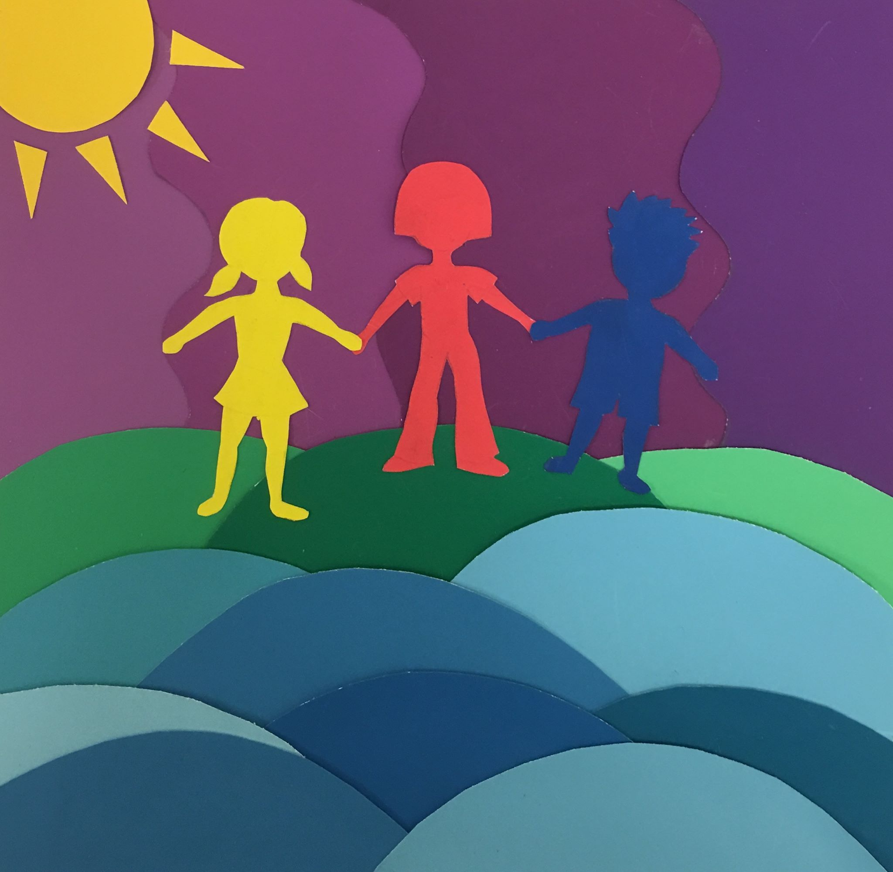

Problem:
To use colored papers to show an understanding of different color schemes such as complementary, analogous, and triadic.
Action:
I decided to create a scene that looks like it could come from a children’s book because colored paper reminds me of childhood. I made the three children different triadic colors. The sun and sky are complementary colors, and the grass and ocean are analogous colors.
Results:
A piece that demonstrates an understanding and effective usage of different color schemes and conveys a feeling of harmony. The different colors I used for the children represent people of different ethnicities, religions, and cultures coming together as friends.
Tools Used:
Colored paper